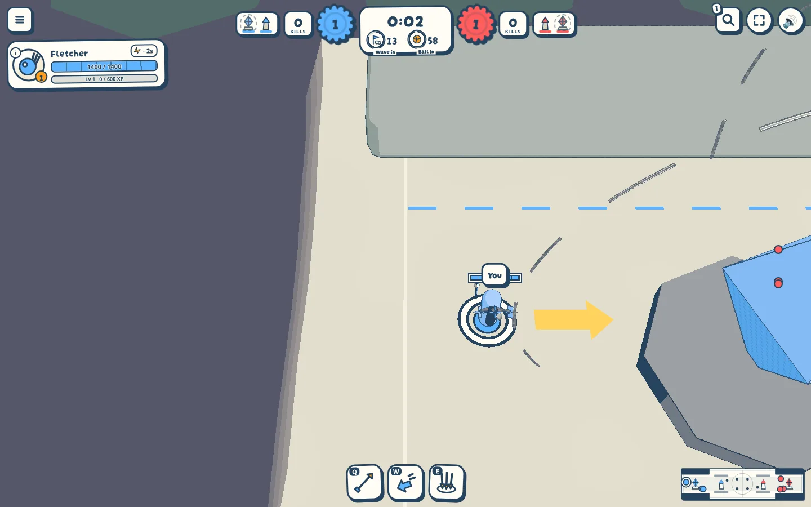
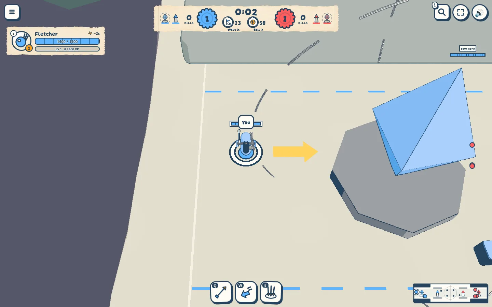
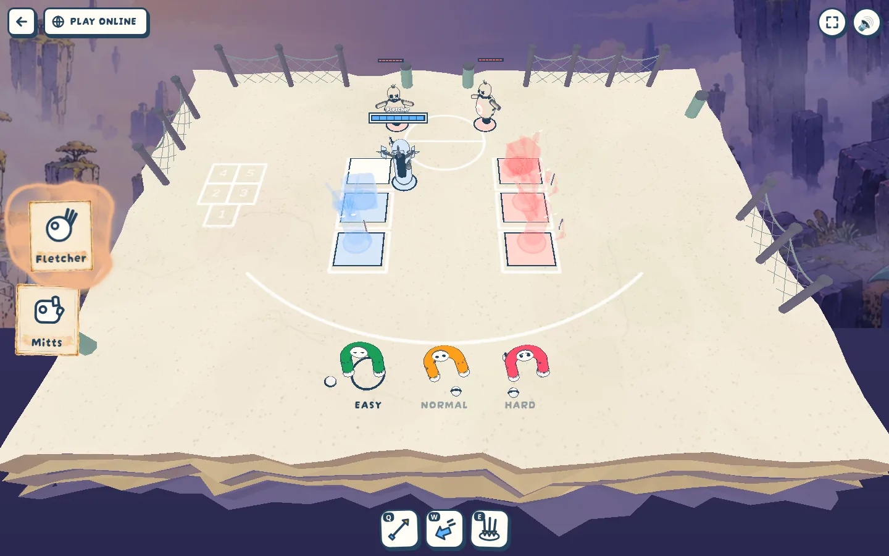
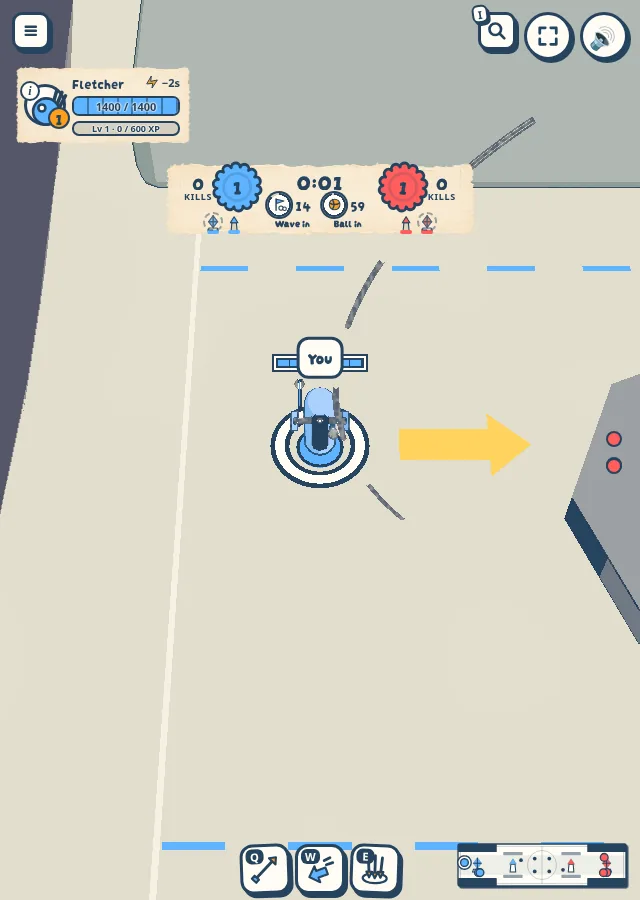

Readouts printed on a ribbon
To review · 2026-10-10 · thr_3s3ps6wjph
Top bar and unit frame are now unframed paper with ink values; cogs lost their shadow. Do they still read as buttons?




To review · 2026-10-10 · thr_3s3ps6wjph
Top bar and unit frame are now unframed paper with ink values; cogs lost their shadow. Do they still read as buttons?



